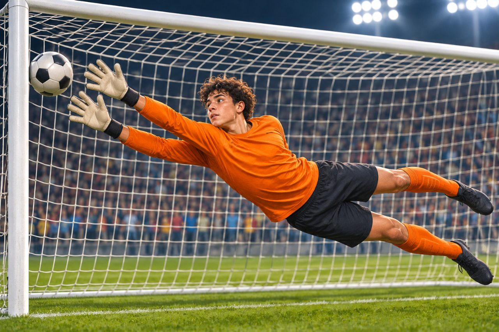

Reize und Sinnesorgane

Denk mal nach: Der Ball fliegt aufs Tor. Was muss im Körper des Torwarts alles passieren, bevor er springt?
Unser Körper bekommt ständig Informationen aus der Umwelt: Licht, Geräusche, Düfte, Wärme, Berührungen. Solche Informationen nennt man .
Stell dir einen Abend auf dem Volksfest vor: Bunte Lichter blinken, Musik dröhnt aus den Lautsprechern, es duftet nach gebrannten Mandeln. Am Grillstand spürst du die Hitze im Gesicht, im Gedränge stößt dich jemand an.
Für jede Art von Reiz hast du ein passendes : Augen, Ohren, Nase, Zunge und Haut. Die Sinnesorgane nehmen die Reize auf. Erst dann kann dein Körper auf sie reagieren.
Ein Abend auf dem Volksfest
Überall prasseln Reize auf dich ein. Tippe auf die Zahlen: Welcher Reiz ist das – und welches Sinnesorgan nimmt ihn auf?
MERKE
- Reize sind Informationen aus der Umwelt, zum Beispiel Licht, Schall, Duftstoffe, Geschmacksstoffe, Wärme, Kälte und Berührung.
- Die Sinnesorgane nehmen die Reize auf: Auge (Licht), Ohr (Schall), Nase (Duftstoffe), Zunge (Geschmacksstoffe), Haut (Wärme, Kälte, Berührung).
Welches Sinnesorgan nimmt den Reiz auf?
Tippe eine Karte an und dann das passende Sinnesorgan.
Wahrnehmung im Gehirn
Jedes Sinnesorgan enthält besondere Zellen: die . Jede Sorte ist auf einen bestimmten Reiz . Die Lichtsinneszellen im Auge reagieren auf Licht, die Sinneszellen im Ohr auf Schall, die Sinneszellen in der Haut auf Wärme, Kälte und Berührung.
Die Sinnesorgane arbeiten also wie die in einem technischen Gerät: Sie nehmen Informationen aus der Umgebung auf und melden sie weiter.
Die Sinneszellen wandeln den Reiz in um. leiten diese Signale zum . Erst dort entsteht die . Wir sehen also nicht mit dem Auge, sondern mit dem Gehirn!
Das Gehirn vergleicht die neuen Informationen mit Erinnerungen, bewertet sie und speichert Wichtiges. Wenn nötig, schickt es Befehle an die Muskeln – zum Beispiel: „Greif zu!“
Wähle einen Reiz und beobachte: Welche Sinneszellen reagieren? Wohin laufen die Signale? Probiere alle fünf Reize aus.
| Reiz | Sinnesorgan | Sinneszellen | Im Gehirn: Wahrnehmung |
|---|
MERKE
- In jedem Sinnesorgan gibt es Sinneszellen. Jede Sorte ist auf einen Reiz spezialisiert.
- Die Sinneszellen wandeln den Reiz in elektrische Signale um. Nerven leiten die Signale zum Gehirn.
- Erst im Gehirn entsteht die Wahrnehmung. Das Gehirn vergleicht, bewertet und speichert – und schickt, wenn nötig, Befehle an die Muskeln.
Vom Sinnesorgan ins Gehirn
Tippe zuerst auf eine Lücke, dann auf das passende Wort. Zwei Wörter bleiben übrig.
Was stimmt?
Der Weg einer Reaktion
Ein Ball fliegt auf das Tor zu. Der Torwart sieht ihn, entscheidet blitzschnell und springt. Dabei läuft in seinem Körper eine Kette von Schritten ab – bei jeder dieselbe.
Die Signale nehmen zwei Wege: leiten sie von den Sinnesorganen zum Gehirn. leiten die Befehle vom Gehirn zu den Muskeln. Viele dieser Nerven verlaufen im .
- : Die Lichtsinneszellen im Auge nehmen den Ball wahr und wandeln den Reiz in elektrische Signale um.
- : Sensorische Nerven leiten die Signale zum Gehirn.
- : Das Gehirn vergleicht mit Erinnerungen aus dem Training, macht sich ein Gesamtbild und entscheidet: Springen!
- Erregungsleitung: Motorische Nerven leiten die Befehle über das Rückenmark zu den Muskeln.
- Reaktion: Die Muskeln – das – führen die Bewegung aus. Der Torwart springt.
MERKE
- Jede Reaktion läuft in fünf Schritten ab: Reizaufnahme → Erregungsleitung → Verarbeitung → Erregungsleitung → Reaktion.
- Reiz → Sinnesorgan → sensorische Nerven → Gehirn → motorische Nerven (über das Rückenmark) → Erfolgsorgan, z. B. Muskel → Reaktion.
Die Fußgängerampel wird grün
Du wartest an der Ampel. Sie springt auf Grün, und du gehst los. Bringe die Schritte mit den Pfeilen in die richtige Reihenfolge.
Welcher Schritt ist das?
Tippe links einen Schritt an und dann rechts die passende Beschreibung.
Beschreibe in eigenen Worten ✨ KI prüft
Schreibe ganze Sätze oder Stichpunkte. Die KI achtet nur auf den Inhalt, nicht auf die Rechtschreibung.
Die Reaktionszeit
Vom Reiz bis zur Reaktion vergeht immer etwas Zeit. Diese Zeit heißt . Meist sind es einige Zehntelsekunden (eine Zehntelsekunde = 0,1 s).
Weil das so kurz ist, rechnet man oft in : 1 s = 1 000 ms. Eine Reaktionszeit von 0,3 s – das sind 300 ms.
Im Straßenverkehr kann jede Zehntelsekunde entscheiden. Ein Auto mit 50 km/h fährt in einer Sekunde fast 14 m weit. Wer eine halbe Sekunde später reagiert, fährt 7 m weiter, bevor er überhaupt bremst.
Alkohol, Drogen und Ablenkung – zum Beispiel durch das Handy – verlängern die Reaktionszeit.
Versuch zu zweit: Reaktionstest mit dem Lineal
- Lege deinen Unterarm auf den Tisch. Die Hand ragt über die Tischkante, Daumen und Zeigefinger sind ein Stück geöffnet.
- Dein Partner hält ein langes Lineal so, dass die Null genau zwischen deinen Fingern hängt.
- Ohne Ankündigung lässt er los. Du fängst das Lineal, so schnell du kannst.
- Lies an deinen Fingern ab, wie weit das Lineal gefallen ist: die Fangstrecke. Wiederholt den Versuch und tauscht die Rollen.
Je kürzer die Fangstrecke, desto kürzer deine Reaktionszeit. Unten kannst du es am Bildschirm ausprobieren – hier übernimmt das Gerät die Rolle des Partners.
Tippe auf „Lineal bereit“. Dann lässt das Gerät das Lineal irgendwann los – ohne Ankündigung. Tippe so schnell wie möglich auf „Zugreifen!“ oder irgendwo auf das Bild (am Computer geht auch die Leertaste).
Ein echter Reaktionstest: Das Feld wird rot. Nach einer zufälligen Wartezeit wird es grün – dann tippst du so schnell wie möglich darauf. Fünf Durchgänge, danach siehst du deinen . Mache danach den Test mit Kopfrechnen und vergleiche.
MERKE
- Die Reaktionszeit ist die Zeit zwischen der Aufnahme eines Reizes und der Reaktion. Meist sind es einige Zehntelsekunden.
- Alkohol, Drogen und Ablenkung verlängern die Reaktionszeit.
- Mit dem Lineal-Versuch kann man sie messen: Je kürzer die Fangstrecke, desto kürzer die Reaktionszeit.
Fangstrecke und Reaktionszeit
Nutze die Tabelle aus dem Lineal-Versuch. Tippe zuerst auf eine Lücke, dann auf das passende Wort. Zwei Wörter bleiben übrig.
Was stimmt über die Reaktionszeit?
Erkläre in eigenen Worten ✨ KI prüft
Schreibe ganze Sätze oder Stichpunkte. Die KI achtet nur auf den Inhalt, nicht auf die Rechtschreibung.
Training
Löse das Kreuzworträtsel
Tippe in ein Kästchen und schreibe. Tippst du ein Kästchen zweimal an, wechselt die Richtung. Ü schreibst du als UE. Hängst du fest? Bei jeder Frage hilft 💡 Tipp – erst ein Hinweis, dann der Anfangsbuchstabe. Mit 📋 Wörter zeigen siehst du alle Lösungswörter.
Kreuze an
Profi-Check, Lernkarten und Regelheft
Vom Reiz zur Reaktion
Reize sind Informationen aus der Umwelt. Die Sinnesorgane nehmen sie auf:
| Auge | Licht | Zunge | Geschmacksstoffe |
|---|---|---|---|
| Ohr | Schall | Haut | Wärme, Kälte, Berührung |
| Nase | Duftstoffe | ||
In jedem Sinnesorgan gibt es Sinneszellen, die auf einen Reiz spezialisiert sind. Sie wandeln den Reiz in elektrische Signale um. Nerven leiten die Signale zum Gehirn. Erst dort entsteht die Wahrnehmung. Das Gehirn vergleicht, bewertet und speichert und schickt, wenn nötig, Befehle über Nerven im Rückenmark an die Muskeln.
Ablauf einer Reaktion: Reizaufnahme → Erregungsleitung → Verarbeitung → Erregungsleitung → Reaktion
Reaktionszeit: Zeit zwischen der Aufnahme des Reizes und der Reaktion – meist einige Zehntelsekunden. Alkohol, Drogen und Ablenkung verlängern sie. Messen: Lineal-Versuch (kürzere Fangstrecke = kürzere Reaktionszeit).
Wortspeicher
Alle Fachbegriffe dieses Moduls auf einen Blick.
Wie geht es weiter?
Mit diesem Modul hat der neue Themenbereich Nervensystem begonnen. Du weißt jetzt: Nerven leiten Signale zum Gehirn und vom Gehirn zu den Muskeln. Doch wie ist das Nervensystem aufgebaut – und wie sieht eine einzelne Nervenzelle aus? Das erfährst du in Modul 2.